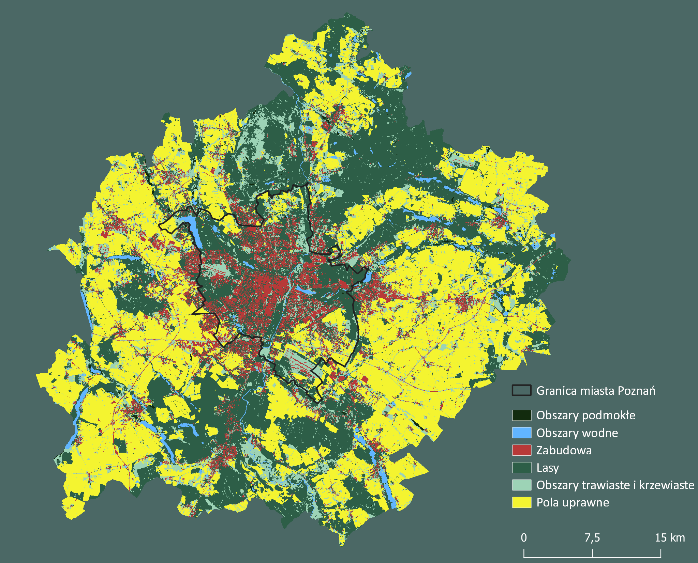
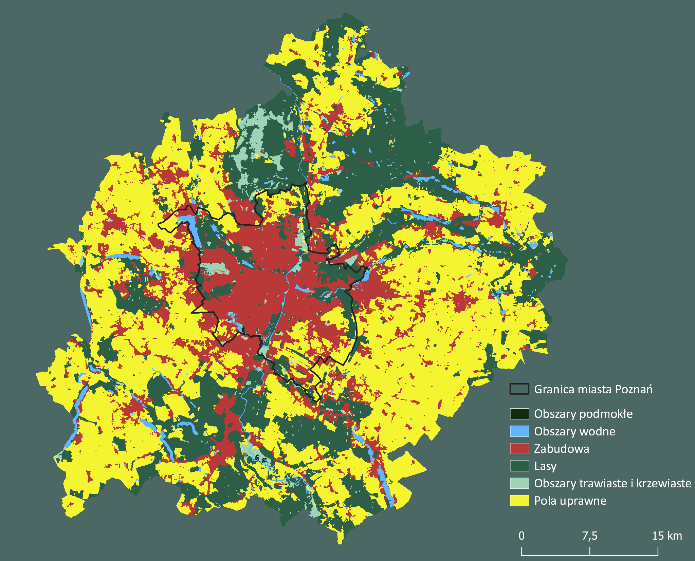

Wprowadzenie
Poniższa publikacja jest wynikiem projektu badawczego przeprowadzonego przez Sekcję Geoinformacji Studenckiego Koła Naukowego na Uniwersytecie im. Adama Mickiewicza w Poznaniu.
Głównym celem projektu było porównanie dokładności różnych źródeł danych obejmujących globalne oraz krajowe pokrycie i użytkowanie terenu na przykładzie miasta Poznań i powiatu poznańskiego.
Powiat poznański oraz miasto Poznań są położone w zachodniej części Polski, w centrum województwa wielkopolskiego.
Obszar ten charakteryzuje bardzo duża powierzchnia terenu - Poznań, miasto na prawach powiatu, znajduje się w pierwszej dziesiątce największych miast w Polsce (262 km²).
Powiat Poznański, który dzieli się na 17 gmin otaczających Poznań, również jest jednym z największych powiatów w kraju (1900 km²).
Aglomeracja ta, ze względu na bliskość dużego miasta i terenów wiejskich, wyróżnia się znacznym zróżnicowaniem pokrycia terenu i użytkowania ziemi, a także złożonością przestrzenną poszczególnych klas, która może wpływać na różnice w dokładności klasyfikacji terenu przez różne zbiory danych.
Dane i metodologia
Porównanie dokładności różnych źródeł pokrycia terenu i użytkowania ziemi na przykładzie miasta Poznań i powiatu poznańskiego zostało przeprowadzone na podstawie siedmiu zbiorów danych dotyczących użytkowania ziemi oraz pokrycia terenu.
Użyte zbiory danych to dane ogólnodostępne i darmowe, pochodzące z 2018 roku (wyjątek stanową Sentinel-2 Global Land Cover z 2017 roku oraz ESA WorldCover z roku 2020).
Referencyjnym zbiorem danych, do którego porównywane były pozostałe produkty, była Baza Danych Obiektów Topograficznych (BDOT10k), zawierająca informacje o pokryciu i użytkowaniu terenu.
Urban Atlas (UA) to baza danych skoncentrowana na funkcjonalnych obszarach miejskich, opracowywana dla najbardziej zaludnionych miast europejskich, głównie tych o liczbie mieszkańców przekraczającej 50 000.
Podobnie jak BDOT10k, jedna z warstw bazy Urban Atlas zawiera szczegółowe dane o użytkowaniu ziemi oraz pokryciu terenu.
Pozostałe produkty, takie jak Sentinel-2 Global Land Cover (S2GLC), Esri Land Cover, ESA WorldCover oraz CORINE Land Cover (CLC), zostały utworzone na podstawie danych satelitarnych. Proces tworzenia Sentinel-2 Global Land Cover oraz Esri Land Cover został oparty o zobrazowania satelitarne z misji Sentinel-2.
Do stworzenia ESA WorldCover oprócz danych Sentinel-2 wykorzystano również dane radarowe z misji Sentinel-1, a produkt CORINE Land Cover 2018 powstał na podstawie danych Sentinel-2 i Landsat 8.
Oryginalne dane z projektu LUCAS to dane punktowe, w których rachmistrzowie gromadzili informacje o typie pokrycia terenu i użytkowaniu ziemi na określonych miejscach.
Otrzymane dane zostały wykorzystane do stworzenia ostatniego produktu użytego w opracowaniu - zbioru danych opracowanego przy użyciu metod uczenia maszynowego, wykorzystującego próbki zebrane z projektu LUCAS, dane CORINE Land Cover oraz zharmonizowane zdjęcia satelitarne GLAD Landsat ARD.
Powstały produkt posiada system klasyfikacji CORINE Land Cover, jednak cechuje się wyższą rozdzielczością przestrzenną niż CLC.
Jako referencyjny zbiór danych wybrano Bazę Danych Obiektów Topograficznych, która pochodzi z Państwowego Zasobu Geodezyjnego i Kartograficznego, co czyni ją wiarygodnym źródłem informacji dotyczących pokrycia terenu i użytkowania ziemi na obszarze Polski.
Ze względu na jego największą dostępność wśród zasobów danych, analizę przeprowadzono na danych z 2018 roku, a w przypadku braku danych dla roku 2018 wybrano najbliższy dostępny rocznik (2017 dla Sentinel-2 GLC, 2020 dla ESA WorldCover).
Wszystkie źródła pokrycia terenu i użytkowania ziemi zreklasyfikowano do 6 klas głównych: obszary podmokłe, obszary wodne, zabudowa, lasy obszary trawiaste i krzewiaste i pola uprawne.
Klasy główne wydzielono na podstawie możliwości reklasyfikacji według dokumentacji producenta, a także uwzględniono jedynie klasy występujące na obszarze badań.
Wszystkie zbiory danych zostały przekształcone do układu współrzędnych ETRS2000-PL/CS92, w którym dostępna jest Baza Danych Obiektów Topograficznych.
Następnie dane zostały sprowadzone do wspólnej rozdzielczości (10 m) i ograniczone do określonego obszaru badań.
Analizę porównawczą dokładności wszystkich źródeł danych oraz poszczególnych klas pokrycia terenu i użytkowania ziemi przeprowadzono na podstawie macierzy błędów.
W celu oceny dokładności poszczególnych klas dla każdego źródła danych obliczono precyzję, czułość oraz wskaźnik F1 na podstawie proporcji sklasyfikowanych komórek rastra porównywanego i referencyjnego.
Precyzja odnosi się do procentowego udziału obszarów, w których dana klasa źródła danych zgadza się z tą samą klasą źródła referencyjnego, podczas gdy czułość określa procentowy udział obszarów, w których dana klasa źródła referencyjnego zgadza się z tą samą klasą innego źródła danych.
Wskaźnik F1 stanowi średnią harmoniczną między precyzją a czułością, gdzie jego większa wartość oznacza lepsze odwzorowanie klasyfikacji w stosunku do źródła referencyjnego.
Macierz błędów pozwala na określenie dokładności odwzorowania rzeczywistego stanu terenu oraz błędów i rozbieżności występujących w klasyfikacji.
W celu wyboru najdokładniejszego źródła pokrycia terenu i użytkowania ziemi uwzględniono proporcję poprawnie sklasyfikowanych komórek oraz wskaźnik Kappa, który pozwala na określenie stopnia zgodności pomiędzy reklasyfikacjami, uwzględniając przypadkowe błędy.

Ryc. 1 Reklasyfikacja źródeł pokrycia terenu i użytkowania ziemi
Analiza
Charakterystyka źródeł pokrycia terenu i użytkowania ziemi po reklasyfikacji
Rozkład przestrzenny klas pokrycia terenu i użytkowania ziemi po wykonaniu reklasyfikacji uwidocznił najbardziej charakterystyczne cechy poszczególnych zbiorów, które informują wizualnie przede wszystkim o różnicach w pierwotnej rozdzielczości czy stopniu generalizacji, a także dominujących klasach i skłonności do przeszacowywania lub niedoszacowania poszczególnych klas pokrycia terenu i użytkowania ziemi.
Wizualna analiza poniższych map (ryc. 2-8) pozwala na ocenę, w jaki sposób poszczególne źródła danych klasyfikują różne elementy krajobrazu.
Największe różnice względem BDOT10k są dostrzegalne przede wszystkim w zbiorze CLC, który charakteryzuje się rozkładem przestrzennym uzyskanym z rozdzielczości dużo mniejszej od pozostałych - 100m.
Wśród pozostałych zbiorów, najbardziej zauważalnymi różnicami odznaczają się Sentinel-2 Global Land Cover oraz Urban Atlas, które przeszacowują występowanie kolejno obszarów podmokłych oraz obszarów trawiastych i krzewiastych.

Ryc. 2 Baza danych obiektów topograficznych

Ryc. 4 ESA WorldCover

Ryc. 5 Esri Land Cover

Ryc. 6 Urban Atlas

Ryc. 7 Sentinel-2 Global Land Cover

Ryc. 8 LUCAS
Procentowy udział klas dla każdego ze źródeł danych pozwala stwierdzić ich przeszacowanie bądź niedoszacowanie względem źródła danych BDOT10k.
Poziom zurbanizowania terenu miasta Poznań jest zdecydowanie większy w porównaniu do całej aglomeracji, jednak obszary zurbanizowane są klasą w większości przeszacowaną zarówno dla aglomeracji, jak i miasta Poznań.
W tym przypadku Esri Land Cover jest źródłem, które cechowało się największym przeszacowaniem udziału procentowego zabudowy, wynoszącym względem aglomeracji ok. 8%, natomiast dla miasta Poznań - ok. 22%.
Klasą charakteryzującą się największym niedoszacowaniem są obszary trawiaste i krzewiaste, sklasyfikowane w ramach źródła Esri Land Cover.
Jedną z klas, która osiągnęła bardzo zbliżone wartości względem referencyjnego źródła, są lasy - te jednak w przypadku źródła ESA WorldCover zostały w dużym stopniu przeszacowane o niemal 10% dla aglomeracji oraz o 24,42% dla miasta Poznań.
Największym przeszacowaniem na obszarze aglomeracji oraz miasta odznaczają się obszary podmokłe w ramach zasobu Sentinel-2 Global Land Cover, których udział procentowy wynosi odpowiednio 7% oraz 14%.
W przypadku klasy pola uprawne dla aglomeracji największy błąd ma źródło Urban Atlas z niedoszacowaniem o 7,93%, natomiast dla miasta Poznań pola uprawne zostały przeszacowane przez LUCAS o 5,60%.
Udział procentowy obszarów uprawnych oraz obszarów wodnych dla wszystkich porównywanych źródeł na obszarze aglomeracji oraz miasta Poznań jest bardzo zbliżony do referencyjnych danych BDOT10k.
Zgodność z BDOT10k
Ze względu na specyfikację porównywanych źródeł danych oraz obszaru badań, możemy zaobserwować duże różnice w zgodności klasyfikacji tych samych obszarów względem źródła referencyjnego.
Rycina 9 przedstawia liczbę źródeł pokrycia terenu i użytkowania ziemi, których to obszary zostały zaklasyfikowane poprawnie względem BDOT10k, wraz z udziałem procentowym.
Przedstawiona mapa obrazuje przede wszystkim wpływ złożoności przestrzennej na poprawność reklasyfikacji przez wszystkie źródła pokrycia terenu i użytkowania ziemi – im większe, jednolite obszary danej klasy, tym większa zgodność wszystkich zasobów.
Największą zgodnością odznaczają się zatem obszerne tereny lasów oraz pól uprawnych.

Ryc. 9 Zgodność źródeł danych z BDOT10k
Ponad 50% obszarów całej aglomeracji zostało sklasyfikowanych poprawnie względem BDOT10k przez wszystkie pozostałe źródła pokrycia terenu i użytkowania ziemi – w przypadku miasta Poznań wartość ta wynosi jedynie ok. 35%.
Obszary, w których pięć źródeł jest zgodnych z BDOT10k, stanowią około 17% powierzchni dla aglomeracji, jak i również miasta Poznań.
Zgodność dla czterech i mniej źródeł odznacza się stopniowym spadkiem - czym mniejsza liczba zasobów zgodnych z BDOT10k, tym stanowi ona coraz mniejszy udział procentowy powierzchni obu obszarów - aglomeracji oraz miasta.
Żadne z porównywanych źródeł pokrycia terenu i użytkowania ziemi nie były zgodne z referencyjnym źródłem BDOT10k na ok. 5% obszarów aglomeracji oraz ok. 8% w przypadku miasta Poznań.
Porównanie dokładności klasyfikacji
W celu oceny jakości i dokładności każdego źródła pokrycia terenu i użytkowania ziemi przeprowadzono analizę przy użyciu macierzy przejść.
Metoda ta pozwala na porównanie wyników klasyfikacji z danymi referencyjnymi - w tym przypadku z Bazą Danych Obiektów Topograficznych.
Macierz błędów umożliwia określenie dokładności odwzorowania rzeczywistego stanu terenu oraz błędów i rozbieżności występujących w klasyfikacji.
W celu przedstawienia najbliższego pod względem dokładności klasyfikacji źródła pokrycia terenu i użytkowania ziemi posłużono się proporcją pikseli sklasyfikowanych poprawnie do liczby wszystkich występujących pikseli, a także wskaźnikiem Kappa - miarą pozwalającą określić stopień zgodności pomiędzy reklasyfikacjami, uwzględniającą przypadkowe zgodności i błędy.
Najdokładniejszym zasobem dla całej aglomeracji okazał się LUCAS, o dokładności 0,80 i Kappa wynoszącym 0,71.
Najsłabszym natomiast - Urban Atlas, z dokładnością i Kappa wynoszącym odpowiednio 0,74 i 0,64.
Obszar miasta Poznania najdokładniej względem BDOT10k został sklasyfikowany przez zasób Urban Atlas (dokładność: 0,71, Kappa: 0,6), czyli projekt obejmujący pokrycie i użytkowanie terenu głównie miejskich obszarów.
Najmniej dokładnym zasobem w powiecie Poznań okazał się Sentinel-2 Global Land Cover, o dokładności wynoszącej jedynie 0,63 i wskaźniku Kappa równym 0,53.
Tabela 1. Dokładność oraz wskaźnik Kappa dla porównywanych źródeł
| ŹRÓDŁO POKRYCIA TERENUI UŻYTKOWANIA ZIEMI |
AGLOMERACJA - DOKŁADNOŚĆ |
AGLOMERACJA - KAPPA |
POZNAŃ - DOKŁADNOŚĆ |
POZNAŃ - KAPPA |
| LUCAS |
0,802 |
0,713 |
0,693 |
0,590 |
| ESA WorldCover |
0,786 |
0,695 |
0,644 |
0,535 |
| Esri Land Cover |
0,787 |
0,691 |
0,660 |
0,545 |
| Sentinel-2 Global Land Cover |
0,754 |
0,658 |
0,628 |
0,530 |
| CORINE Land Cover |
0,771 |
0,668 |
0,636 |
0,508 |
| Urban Atlas |
0,742 |
0,644 |
0,706 |
0,601 |
Poza oceną dokładności wszystkich źródeł danych, przeanalizowano również poszczególne klasy pokrycia terenu i użytkowania ziemi każdego z nich. Poniżej przedstawiono procentowy udział niepoprawnie zaklasyfikowanych względem BDOT10k kategorii pokrycia terenu i użytkowania ziemi, uzyskany na podstawie macierzy błędów.
W przypadku miasta Poznań, średnia błędu dla obszarów podmokłych nie obejmuje zasobu Urban Atlas, ze względu na brak tej klasy występującej na obszarze powiatu Poznań.
Klasą obarczoną największym błędem klasyfikacji, zarówno na terenie aglomeracji, jak i miasta Poznań, są obszary podmokłe, ze średnim błędem równym kolejno 0,65 i 0,73.
Obszary podmokłe we wszystkich zbiorach zajmują pierwsze bądź drugie miejsce z największym procentem powierzchni niepoprawnie sklasyfikowanej - to potwierdza tezę, iż jest to najtrudniejsza klasa do klasyfikacji bazującej na zdjęciach satelitarnych.
Kolejnymi klasami z dość dużymi błędami klasyfikacji są obszary trawiaste i krzewiaste, których 44,6% powierzchni na obszarze aglomeracji oraz 31,7% w mieście Poznań zostało zaklasyfikowane niepoprawnie, a także zabudowa - kolejno 38% i 31,2%.
Klasą o największej dokładności klasyfikacji względem BDOT10k okazały się obszary wodne, ze średnim błędem wynoszącym 0,05 w przypadku miasta Poznań i 0,08 w przypadku aglomeracji.
Ze względu na dość znaczące pokrycie powiatu poznańskiego zajmowane przez lasy (ponad 25% powiatu) oraz pola uprawne (44%), a także przede wszystkim ich złożoność przestrzenną, klasy te w przypadku aglomeracji również wyróżniają się niskim błędem klasyfikacji - odpowiednio jedynie 0,16 i 0,12.
W celu przedstawienia szczegółowych statystyk zgodności poszczególnych klas pokrycia terenu i użytkowania ziemi dla każdego źródła, na podstawie macierzy przejść obliczono precyzję (ang. precision), czułość (ang. recall), a także wskaźnik F1 (ang. F1 - score).
Precyzja odnosi się do procentu obszarów, w jakim dana klasa źródła danych zgadza się z tą samą klasą źródła referencyjnego (BDOT10k) - czułość natomiast określa procent, w jakim dana klasa źródła referencyjnego (BDOT10k) zgadza się z tą samą klasą źródła danych.
Wskaźnik F1 to średnia harmoniczna pomiędzy precyzją i czułością - im jego wartość jest większa, tym lepsze odwzorowanie danej klasyfikacji względem źródła referencyjnego.
Wnioski i podsumowanie
W pracy przeanalizowano dokładność 6 różnych zbiorów danych na obszarze miasta Poznań i całej aglomeracji oraz porównano uzyskane wyniki względem najdokładniejszego źródła pokrycia terenu i użytkowania ziemi dostępnego w Polsce – Bazy Danych Obiektów Topograficznych (BDOT10k).
Wybrany obszar badań umożliwił szczegółowe zbadanie zgodności oraz dokładności klasy każdego ze źródeł danych z klasą referencyjną zasobu BDOT10k dla dwóch zróżnicowanych terenów - dużego miasta oraz całej aglomeracji obejmującej powiat Poznań i powiat poznański, charakteryzujący się poza miastem w większości terenami leśnymi oraz rolniczymi.
Uzyskane wyniki charakteryzują się mniejszą zgodnością poszczególnych zasobów danych z BDOT10k oraz dokładnością źródeł na obszarze miasta Poznań, na terenie całej aglomeracji miary te przyjmują natomiast wyższe wartości.
Najdokładniejszym źródłem pokrycia terenu i użytkowania ziemi na terenie miasta okazał się Urban Atlas, na obszarze aglomeracji natomiast – LUCAS.
Warto zauważyć, iż w przypadku miasta Poznań zbiór LUCAS był drugim najdokładniejszym zbiorem i o jedynie punkt procentowy mniej dokładnym od Urban Atlas – ten natomiast w przypadku aglomeracji plasuje się na ostatnim miejscu.
Powyższe wyniki ukazują dość dobry stopień dokładności na terenie Poznania zbioru Urban Atlas, który ze względu na swoją specyfikę jest dedykowany dla obszarów miejskich.
Bardzo dobra dokładność na obu badanych obszarach uzyskana przez projekt LUCAS może wskazywać na przydatność informacji uzyskanych w terenie przez rachmistrzów oraz ich wpływ na zwiększenie dokładności, a co za tym idzie – bardziej szczegółowych informacji odnośnie rzeczywistego pokrycia.
Dokładność poszczególnych klas pokrycia terenu i użytkowania ziemi dla każdego zbioru danych jest dość zróżnicowana, jednak w większości przypadków klasy najmniej oraz najdokładniejsze względem BDOT10k są ze sobą zgodne w każdym z porównywanych zbiorów.
Na obu badanych obszarach w 4 z 6 zbiorów danych – CLC, Esri Land Cover, LUCAS oraz Sentinel-2 Global Land Cover, najmniej dokładną klasą są obszary podmokłe.
Otrzymane wyniki potwierdzają fakt, iż ich w pełni poprawna klasyfikacja ze zdjęć satelitarnych jest niezwykle trudna, co jest zauważalne na przykładzie zajmowanej powierzchni klas zaklasyfikowanych niepoprawnie dla każdego zbioru danych.
Zarówno na obszarze aglomeracji, jak i samego miasta Poznań, najdokładniejszą klasą pokrycia terenu i użytkowania ziemi okazały się obszary wodne – w przypadku całej aglomeracji podobnymi wynikami odznaczyły się również pola uprawne.
Szacunkową zgodność oraz dokładność względem BDOT10k można zauważyć analizując jedynie mapy tematyczne przedstawiające rozkład kategorii pokrycia terenu i użytkowania ziemi po reklasyfikacji, a także mapę przedstawiającą liczbę źródeł zgodnych z BDOT10k.
Na obie wartości, oprócz samego sposobu reklasyfikacji do wspólnych klas, wpływa przede wszystkim rozdzielczość oraz przeznaczenie danego zbioru danych – lokalne lub globalne.
Oprócz tego występuje zdecydowana zależność pomiędzy zgodnością i dokładnością klas a konfiguracją i kompozycją krajobrazu – przede wszystkim różnorodnością i zwartością klas.
Powiat poznański charakteryzuje się występowaniem większych płatów mniejszej ilości klas w stosunku do miasta Poznań – wpływa to na znacznie większą zgodność i dokładność wszystkich źródeł oraz klas na obszarze całej aglomeracji.
Ocena dokładności źródeł pokrycia terenu i użytkowania ziemi jest zależna przede wszystkim od poprawności reklasyfikacji kategorii poszczególnych zbiorów i próbie ujednolicenia wszystkich z nich do kilku wybranych, głównych klas.
Otrzymane wyniki są jedynie przybliżeniem rzeczywistej dokładności zbiorów danych i wynikają z subiektywnej klasyfikacji kategorii pokrycia terenu i użytkowania ziemi, opartej na sugerowanej agregacji klas według dokumentacji poszczególnych zbiorów danych.
Powyższa analiza może zostać wykorzystana do wyboru najbardziej użytecznego zbioru danych na poziomie lokalnym w innych opracowaniach, a także przyczynić się do rozszerzenia badań w kierunku porównania dokładności klas pokrycia terenu i użytkowania ziemi z metrykami krajobrazowymi.